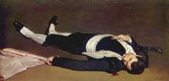

- Home
- Premières années
- Les débuts
- Les défis
- Natures mortes
- Œuvres
Édouard Manet
Les débuts du peintre

Période hispanisante
Le thème espagnol
Les deux premiers tableaux à thème espagnol, Jeune Homme en costume de majo et Mlle V. en costume d'espada, qui sont présentés au Salon des Refusés de 1863 avec Le Déjeuner sur l'herbe, déroutent les critiques et suscitent de vives attaques malgré le soutien d'Émile Zola qui voit là « une œuvre d'une vigueur rare et d'une extrême puissance de ton (...) Selon moi, le peintre y a été plus coloriste qu'il n'a coutume de l'être. Les taches sont grasses et énergiques et elles s'enlèvent sur le fond avec toutes les brusqueries de la nature18.»
Le Jeune Homme en costume de majo est le jeune frère de Manet, Gustave. Quant à Mlle V., c'est un audacieux portrait du modèle fétiche de Manet, Victorine Meurent, travestie en homme. Sur cette toile, Victorine feint de participer en tant qu’espada à une tauromachie. Tout est mis en œuvre cependant pour montrer que le sujet n’est qu’une supercherie : Victorine, du fait de la menace représentée par le taureau, ne devrait normalement pas fixer le spectateur avec autant d'insistance. L'ensemble de la scène est tout simplement un prétexte visant à représenter la modèle dans des habits masculins et donc à faire ressortir de manière plus éclatante encore sa féminité.
Les attaques de Théophile Thoré-Burger sont particulièrement virulentes :
« (...) une demoiselle de Paris en costume de espada, agitant son manteau pourpre dans le cirque d'un combat de taureau. Monsieur Manet adore l'Espagne et son maître d'affection paraît être Francisco de Goya dont il imite les tons vifs et heurtés. »
Il est vrai que Manet ne visita l'Espagne qu'en 1865, et qu'il ne s'est peut-être familiarisé avec les coutumes de Madrid et les détails de la corrida qu'à travers le Voyage en Espagne de Théophile Gautier, ou les détails de la corrida donnés par Prosper Mérimée20. Il avait en outre, dans son atelier, une collection de costumes qu'il utilisait comme accessoires et qui lui étaient fournis par un marchand espagnol du passage Jouffroy. Comme le remarque Beatrice Farwell, on retrouve le costume de Mlle V dans d'autres tableaux de Manet : le Chanteur espagnol et le Jeune Homme en costume de majo21.
L'influence de Vélasquez
Après quelques années employées à copier de grands tableaux, c’est au Salon de 1859 que Manet se décide à dévoiler officiellement sa première œuvre, intitulée Le Buveur d'absinthe. La toile, de facture réaliste, dénote l’influence de Gustave Courbet, mais constitue surtout un hommage à celui que Manet a toujours considéré comme « le peintre des peintres »22, Diego Vélasquez : « j'ai, dit-il essayé de faire un type de Paris en mettant dans l'exécution la naïveté du métier que j'ai trouvée chez Vélasquez11. »
Beaucoup de peintures d’Édouard Manet comportent ainsi des références au maître espagnol.
Cependant, Le Buveur d'absinthe si peu académique est refusé au Salon de 1859. Le jury ne comprend pas cette œuvre qui illustre d'une certaine manière le Vin des chiffonniers de Baudelaire « buvant et se cognant au mur comme un poète 11.» De même Thomas Couture considère que le seul buveur d'absinthe est ici le peintre11. Manet apprend ce refus en présence de Baudelaire, de Delacroix et d'Antonin Proust. et il pense que c'est Thomas Couture qui en est responsable « Ah! il m'a fait refuser! Ce qu'il a dû en dire devant les bonzes de son acabit (...)23. »
Le jeune artiste bénéficie pourtant de plusieurs soutiens remarqués, avec notamment Eugène Delacroix24, qui assure sa défense auprès du jury, et surtout Charles Baudelaire11, qui venait de faire sa connaissance et s’employait à le faire connaître dans la société parisienne.
Manet, à ce moment-là, est fasciné par l’art espagnol 25, qu’il associe au réalisme, par opposition à l’art italianisant des Académiques. Déjà bien avant son premier voyage en Espagne en 1865, Manet consacre plusieurs toiles à ce qu’il désigne lui-même comme des « sujets espagnols » : danseuse Lola de Valence, et le guitarero du Chanteur espagnol.
Le Chanteur espagnol lui vaut son premier succès. Il est accepté au Salon de Paris en 1861 avec le le portrait de ses parents26. Les critiques Jean Laran et Georges Le Bas rapportent qu'il fit l'admiration d'Eugène Delacroix et de Ingres et que ce fut sans doute grâce à l'intervention de Delacroix que le tableau obtint la mention « honorable »26. Il plaît aussi à Baudelaire et à Théophile Gautier qui déclare dans Le Moniteur universel du 3 juillet 1861 : « Il y a beaucoup de talent dans cette figure de grandeur naturelle peinte en pleine pâte, d'une brosse vaillante et d'une couleur très vraie27. »
Les diverses influences pour ce tableau ont fait l'objet de discussions nombreuses. Selon Antonin Proust, Manet aurait déclaré lui-même :« En peignant cette figure, je pensais aux maîtres de Madrid, et aussi à Hals28 ». Les historiens d'art ont également évoqué l'influence de Goya (en particulier de l'eau forte : Le Chanteur aveugle), Murillo, Diego Vélasquez ainsi que celle de Gustave Courbet dans sa tendance réaliste28.
Le tableau fut également admiré par un groupe de jeunes artistes : Alphonse Legros, Henri Fantin-Latour, Edgar Degas et d'autres. Cette rencontre avec les jeunes peintres fut décisive, car elle désigna Manet comme le chef de file de l'avant-garde29.
La Tauromachie et l'influence de Goya
Une des toiles de Manet les plus connues, traitant de tauromachie, est son Homme mort, daté de 1864.
L’œuvre, à l’origine, n’est en fait qu’une partie d’une composition plus vaste destinée au Salon de la même année, et intitulée Épisode d’une course de taureaux : le peintre, mécontent des critiques acerbes de Théophile Thoré-Burger30 et des caricatures que Bertall en a fait dans « Le Journal amusant », découpe l'l'Épisode en deux parties qui formeront deux toiles autonomes : L'Homme mort et La Corrida31conservée à la Frick Collection à New York32.
Manet découpe La Corrida de façon à garder trois toreros à la barrière (premier titre choisi pour cette œuvre était d'ailleurs Toreros en action), mais s'il voulait garder les hommes en pied, il fallait qu'il coupe pratiquement tout le taureau. L'artiste décida plutôt de couper les pieds du torero de gauche et de rogner sur la foule dans les gradins33.
Lorsque Manet a réalisé Épisode d’une course de taureaux, il n'était encore jamais allé en Espagne. C'est à la suite de ce voyage qu'il exprime son admiration pour la corrida dans une lettre adressée à Baudelaire le 14 septembre 1865: « Un des plus beaux, des plus curieux, et des plus terribles spectacles que l'on puisse voir, c'est une course de taureaux. J'espère, à mon retour, mettre sur la toile l'aspect brillant, papillotant et en même temps dramatique de la corrida à laquelle j'ai assisté34. » C'est sur ce même thème, qu'il a réalisé plusieurs grands formats : Le Matador saluant35 que Louisine Havemeyer acheta à Théodore Duret 36, et Combat de taureau37 actuellement conservé au Musée d'Orsay à Paris.
Étienne Moreau-Nélaton et Adolphe Tabarant38, s'accordent à dire que le frère de Manet, Eugène, a servi de modèle pour le personnage du matador saluant, et qu'il s'agit bien d'un torero applaudi par la foule après la mort du taureau39.
Manet commence le Combat de taureau, à son retour de voyage en Espagne, en 1865. Dans son atelier de Paris, rue Guyot (aujourd'hui rue Médéric), il est possible qu'il ait utilisé à la fois des croquis faits sur place en Espagne (croquis que l'on n'a pas retrouvés à l'exception d'une aquarelle), mais aussi des gravures de La Tauromachie de Francisco de Goya qu'il possédait40. Manet vouait une grande admiration au peintre espagnol qui l'a encore influencé sur d'autres sujets que la tauromachie notamment pour L'Exécution de Maximilien.

Entrée dans la vie mondaine
Édouard Manet, d'après la description qu'en fait Antonin Proust, était un jeune homme plein d’assurance, volontiers amical et sociable. C’est pourquoi l’époque de ses premiers succès est aussi celle de son entrée remarquée dans les cercles intellectuels et aristocratiques parisiens.
« Il se forma autour de Manet une petite cour. Il allait presque chaque jour aux Tuileries de deux à quatre heures.(...) Baudelaire était là son compagnon habituel. On regardait curieusement ce peintre élégamment vêtu qui disposait sa toile, s'armait de sa palette, et peignait »
La description de Proust donne une idée assez juste de Manet qui était bien un des dandys en haut de forme de son tableau, habitués de son atelier, des Tuileries et du café Tortoni de Paris, café élégant du boulevard, où il prenait son déjeuner42, avant d'aller aux Tuileries. « Et quand il revenait chez Tortoni de cinq à six heures, c'était à qui le complimenterait sur ses études qu'on se passait de main en main43. »
Avec La Musique aux Tuileries(1862) Manet brosse le tableau de l'univers élégant dans lequel il évoluait. Le tableau dépeint un concert donné au jardin des Tuileries et dans lequel le peintre représente des personnes qui lui sont proches.
On distingue, de gauche à droite, un premier groupe de personnages masculins parmi lesquels son ancien compagnon d'atelier Albert de Balleroy, Zacharie Astruc (assis), Charles Baudelaire debout, et derrière Baudelaire, à gauche : Fantin-Latour42. Parmi les hommes, Manet a placé son frère Eugène, Théophile Gautier, Champfleury, le baron Taylor, Aurélien Scholl11. La première dame habillée en blanc en partant de la gauche est Mme Lejosne, femme du commandant Hippolyte Lejosne chez lequel Manet a fait la connaissance de Baudelaire. Ceux qui fréquentaient Lejosne étaient tous des amis de Manet44. A côté de Mme Lejosne se trouve Mme Offenbach.
Le peintre s’est lui-même représenté sous les traits du personnage barbu le plus à gauche de la composition. A sa droite, assis contre le tronc, on reconnait « celui que Manet appelait le Mozart des Champs Élysées : Gioacchino Rossini45. »
Le tableau fut jugé sévèrement par Baudelaire qui n'en parla pas en 186346 et il fut vivement attaqué par Paul de Saint-Victor : « Son concert aux Tuileries écorche les yeux comme la musique des foires fait saigner l'oreille46. » Hippolyte Babou parle de la « manie de Manet de voir par taches (...) la tache-Baudelaire, la tache-Gautier, la tache-Manet 47. »
La Musique aux Tuileries est en fait le premier modèle de toutes les peintures impressionnistes et post-impressionnistes qui représentent la vie contemporaine en plein air. Il a inspiré dans les décennies suivantes : Frédéric Bazille, Claude Monet, et Auguste Renoir46. Sa postérité sera immense.
Toutefois, à cette époque, Manet n'est pas encore le peintre de plein air qu'il deviendra par la suite. L'image de cette élégante société du Second empire qu'il a groupée sous les arbres est certainement un travail d'atelier42. Les personnages qui sont de véritables portraits sont peut-être peints d'après des photographies48.
Plus de dix années plus tard, au printemps 1873, Manet réalisera une toile d’une facture similaire à celle de La Musique aux Tuileries, intitulée Bal masqué à l'opéra et où figurent plusieurs de ses connaissances. L’opéra en question, situé rue Le Peletier dans le IXe arrondissement, devait d’ailleurs être réduit en cendres par un incendie la même année. Un autre rendez-vous mondain parisien de l'époque, les courses hippiques de Longchamp, inspirent au peintre un tableau : Les Courses à Longchamp.